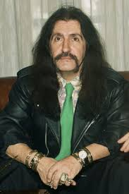

Barış Manço
Barış Manço (1943-1999), Türk rock müziğinin öncülerinden ve kültür elçilerinden biridir. Hem sanatçı hem televizyon programcısı olarak Türkiye’nin müzik ve kültür dünyasında derin izler bırakmıştır. Anadolu rock türünün öncüsü olarak müziğe kendi özgün yorumunu getirmiştir.
Hayatı ve Eğitimi
7 Ocak 1943'te İstanbul'da doğan Barış Manço, küçük yaşlardan itibaren müziğe ilgi duymaya başladı. İstanbul Teknik Üniversitesi Elektronik Fakültesi'nde eğitim gördü ancak müziğe olan tutkusu onu farklı bir yola yönlendirdi. Gençlik yıllarında Avrupa’da müzik yaparak deneyim kazandı.
Müzik Kariyeri
1960'ların başında Türkiye’de müzik yapmaya başlayan Barış Manço, Anadolu rock akımının öncüsü olarak, Batı müziği ile Anadolu'nun geleneksel müziğini birleştirdi. "Dağlar Dağlar", "Gülpembe", "Nick the Chopper" ve "Halil İbrahim Sofrası" gibi eserleriyle milyonlara ulaştı. Sözlerinde toplumsal mesajlar ve insana dair hikayeler vardı. 70’ler ve 80’lerde Türkiye’de ve Avrupa’da büyük başarılar elde etti.
Televizyon Programcılığı
Barış Manço, 1990’larda TRT'de yayınlanan "7'den 77'ye" adlı televizyon programıyla da tanındı. Programda Türkiye’nin farklı bölgelerinden kültürel değerleri tanıtarak toplumlararası köprüler kurdu. Bu sayede sadece bir müzisyen değil, aynı zamanda önemli bir kültür elçisi oldu.
Ödüller ve Onurlar
Barış Manço, yaşamı boyunca birçok ödül aldı; Türkiye’nin yanı sıra Avrupa’da da saygı gördü. Türkiye Cumhuriyeti tarafından “Devlet Sanatçısı” unvanı verildi. Sanatçı, müziğiyle ve insani duruşuyla genç nesillere örnek olmaya devam etmektedir.
Mirası
Barış Manço, vefatından sonra da eserleriyle yaşamaya devam ediyor. Müzik ve kültür alanında Türkiye’nin en önemli figürlerinden biri olarak anılıyor. İstanbul'da Barış Manço Kültür Merkezi ve müzesinde hayatı ve eserleri ziyaretçilere sunulmaktadır. Müziği hala geniş kitlelere ilham vermektedir.
Önemli Eserleri
- Dağlar Dağlar
- Gülpembe
- Nick the Chopper
- Halil İbrahim Sofrası
- Kara Sevda
- Alla Beni Pulla Beni
- Dönence